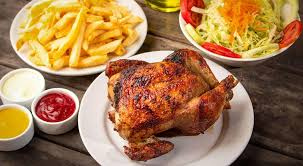
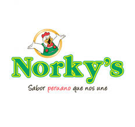

Pasos para disfrutar tu pedido:
- Elige tu plato favorito
- Haz tu pedido en caja o delivery
- Disfruta el sabor autentico del Peru
El pollo a la brasa es uno de los platos mas emblematicos del Peru, con un sabor unico gracias a su marinado especial y coccion al carbon.

